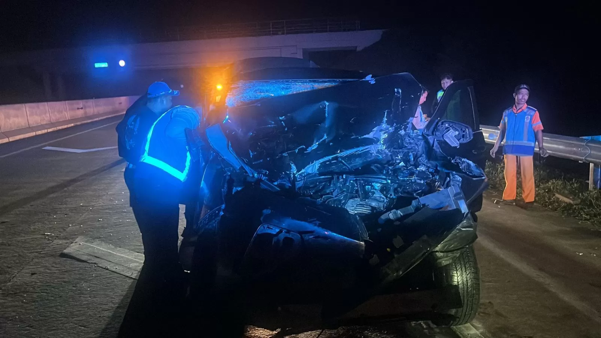

PEMUDA TERTABRAK KERETA DI SIDOARJO

Pemuda Tertabrak KA Sri Tanjung Di Sidoarjo
Warga Kabupaten Ngawi berduka atas meninggalnya Waluyo Jati Sasono, Wakil Ketua DPRD Kabupaten Ngawi.
Beliau tewas dalam sebuah kecelakaan lalu lintas yang terjadi di Jalan Tol Solo-Ngawi, tepatnya di KM 547.800 A, wilayah Sambungmacan, Sragen, pada Jumat dini hari (6/6/2025).
Selain menjabat Wakil Ketua DPRD, almarhum juga merupakan Ketua DPC Partai Gerindra Kabupaten Ngawi. Jenazah Waluyo Jati Sasono saat ini masih berada di RSUD Sragen.
Kecelakaan terjadi pada Jumat (6/6/2025) dini hari sekitar pukul 03.15 WIB, melibatkan dua kendaraan: Toyota Fortuner dengan nomor polisi AE-1240-JP dan truk Nissan Tronton dengan nomor polisi AA-8469-BP.
Menurut Kasat Lantas Polres Sragen, Iptu Kukuh Tirto Satiyo Leksono, kendaraan Toyota Fortuner yang ditumpangi oleh Waluyo Jati Sasono melaju dari arah barat menuju timur (Ngawi).
Saat itu, kendaraan tersebut berada di lajur cepat, sementara truk Nissan Tronton bergerak di lajur lambat.
Diduga, pengemudi Toyota Fortuner kurang konsentrasi saat mendekati lokasi kejadian, sehingga kendaraan tersebut terlalu ke kiri dan memasuki lajur yang sedang dilalui oleh truk.
Akibatnya, kecelakaan tidak dapat dihindari dan mobil menabrak bagian belakang truk dengan keras.
Korban Meninggal di Tempat
Akibat benturan keras, Waluyo Jati Sasono dan satu orang lainnya tewas di lokasi kejadian. Dua orang lainnya dilaporkan mengalami luka ringan dan saat ini sedang dirawat di RSUD Sragen. (din/dam)